Soru 1Cevap: D
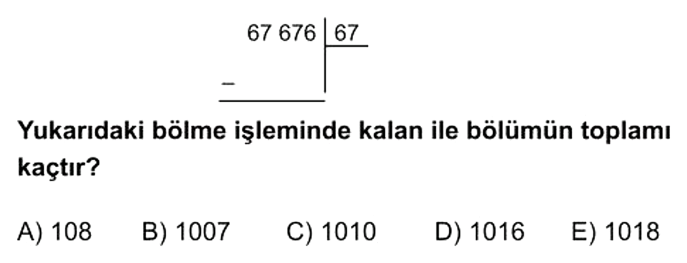
Çözüm
- $67\cdot1010=67\,670$.
- $67\,676-67\,670=6$ → bölüm 1010, kalan 6.
- $1010+6=1016$ → D.
Cevap: D
Soru 2Cevap: A
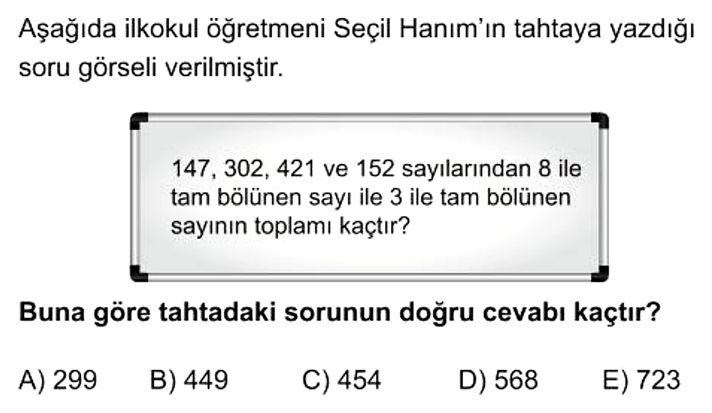
Çözüm
- 8 ile: son üç basamak; $152=8\cdot19$ ✓.
- 3 ile: rakamlar toplamı; $147\to12$ ✓ ($302\to5$, $421\to7$).
- $152+147=299$ → A.
Cevap: A
Soru 3Cevap: B
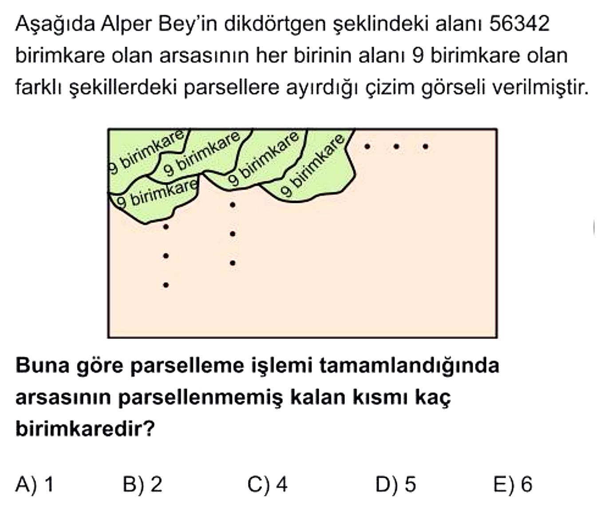
Çözüm
- Parsellenmeyen kısım, $56342$'nin 9 ile bölümünden kalandır.
- $5+6+3+4+2=20$.
- $20$'nin 9 ile kalanı $2$ → B.
Cevap: B
Soru 4Cevap: C
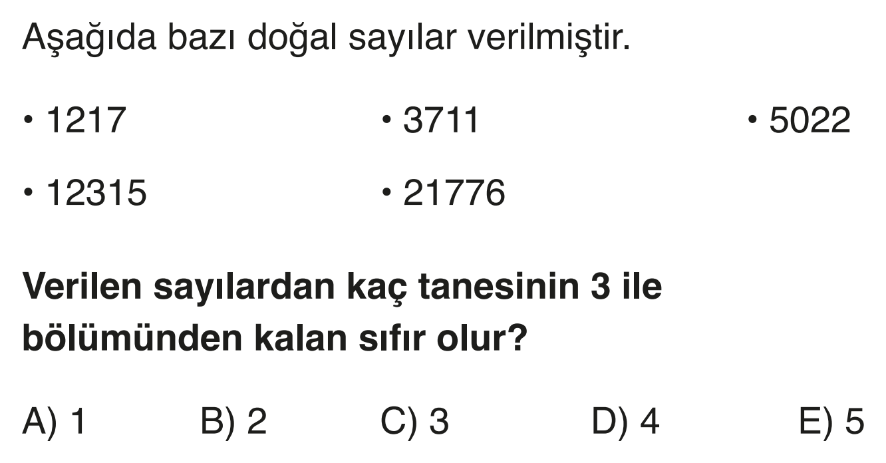
Çözüm
- Rakamlar toplamları: $1217\to11$, $3711\to12$, $5022\to9$, $12315\to12$, $21776\to23$.
- 3'ün katı olanlar: 12, 9, 12.
- 3 sayı → C.
Cevap: C
Soru 5Cevap: C
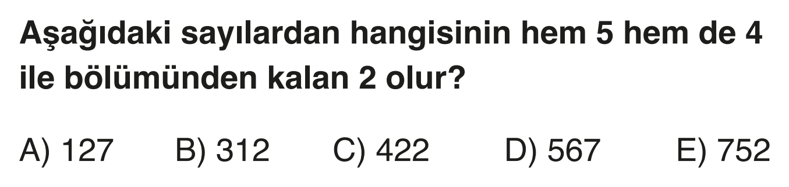
Çözüm
- 5 ile kalan 2 → birler 2 ya da 7; 4 ile kalan 2 → son iki basamak $4k+2$.
- $127$: 4 ile 3; $312$: 4 ile 0; $422$: $22=4\cdot5+2$ ✓.
- $422$ → C.
Cevap: C
Soru 6Cevap: B
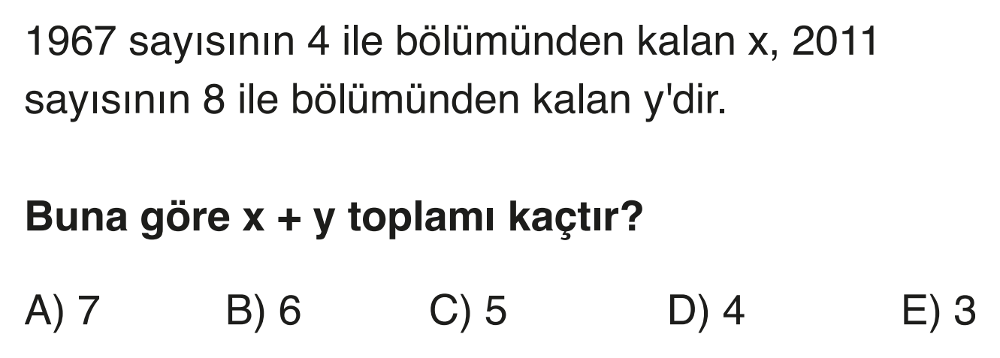
Çözüm
- $1967$: son iki basamak $67=4\cdot16+3$ → $x=3$.
- $2011$: son üç basamak $11=8+3$ → $y=3$.
- $x+y=6$ → B.
Cevap: B
Soru 7Cevap: E
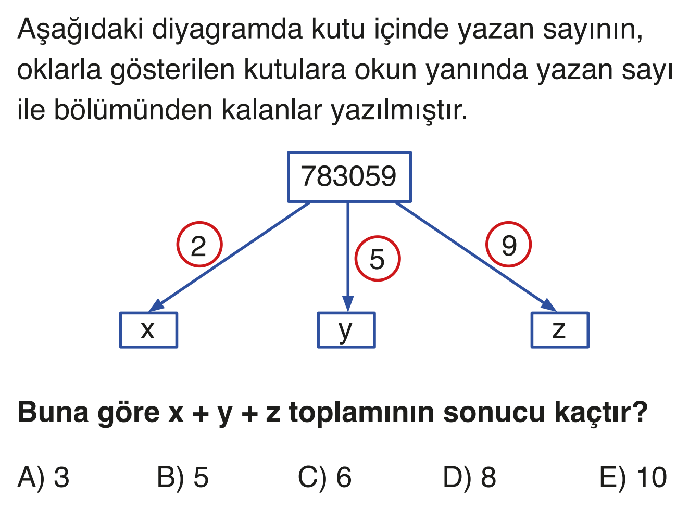
Çözüm
- $783059$ tek → 2 ile kalan $x=1$; birler 9 → 5 ile kalan $y=4$.
- Rakamlar toplamı $32$ → 9 ile kalan $z=5$.
- $x+y+z=10$ → E.
Cevap: E
Soru 8Cevap: A
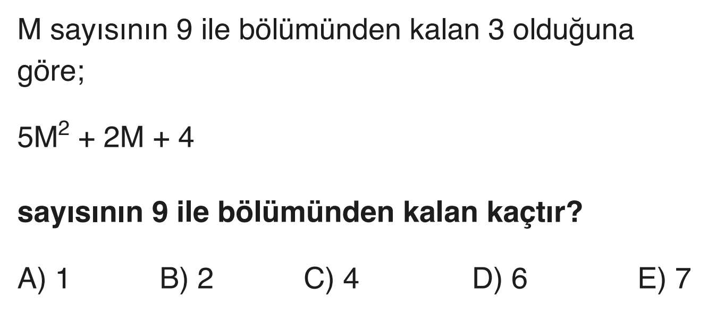
Çözüm
- $M\equiv3 \pmod 9$ ise $M$ yerine 3 yazılabilir.
- $5\cdot9+2\cdot3+4=55$.
- $55$'in 9 ile kalanı $1$ → A.
Cevap: A
Soru 9Cevap: E
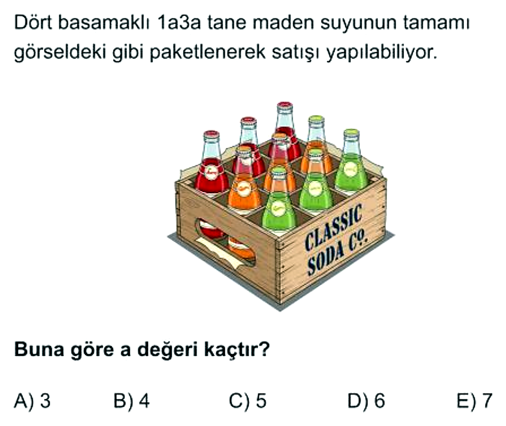
Çözüm
- Kasada $3\times3=9$ şişe var; $\overline{1a3a}$ 9 ile tam bölünmeli.
- Rakamlar toplamı $4+2a$ 9'un katı.
- $4+2a=18 \Rightarrow a=7$ → E.
Cevap: E
Soru 10Cevap: A
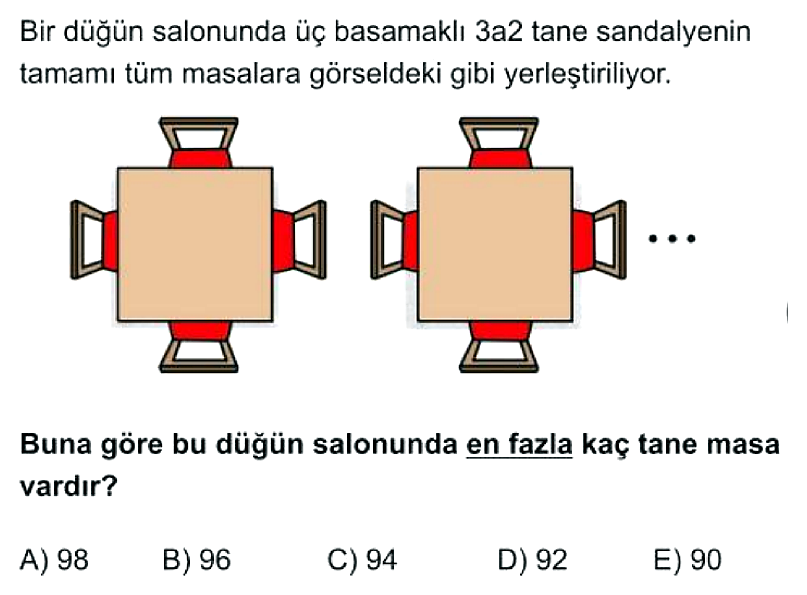
Çözüm
- Her masada 4 sandalye: $\overline{3a2}$ 4 ile bölünmeli → $\overline{a2}$ 4'ün katı → $a$ tek.
- En büyük $a=9$: $392$ sandalye.
- $\frac{392}4=98$ masa → A.
Cevap: A
Soru 11Cevap: C
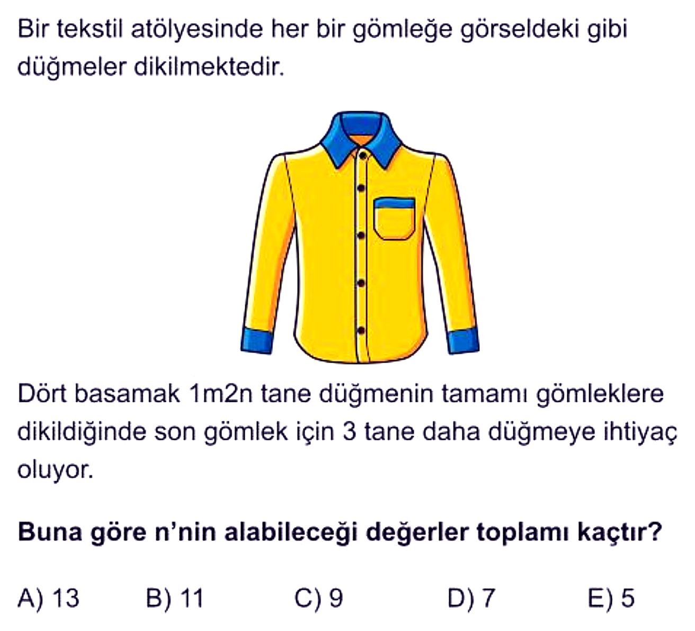
Çözüm
- Her gömlekte 5 düğme; son gömlekte 3 eksik → düğme sayısı 5'e bölününce 2 kalır.
- $\overline{1m2n}\equiv2 \pmod 5 \Rightarrow n\in\{2,7\}$.
- $2+7=9$ → C.
Cevap: C
Soru 12Cevap: C
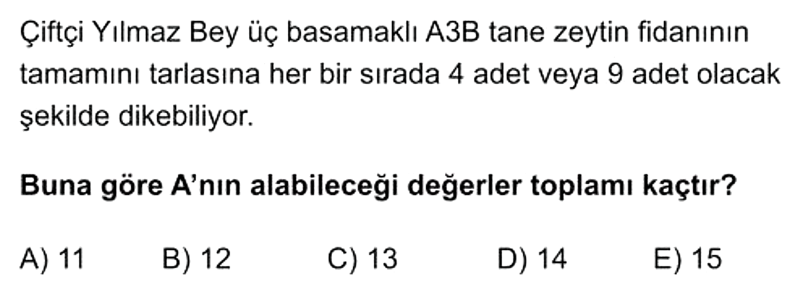
Çözüm
- Sıralara 4'er ya da 9'ar → $\overline{A3B}$ 4 ve 9 ile bölünür.
- 4: $\overline{3B}\in\{32,36\}$; 9: $A+3+B$ 9'un katı.
- $B=2 \Rightarrow A=4$; $B=6 \Rightarrow A=9$ → $13$ → C.
Cevap: C
Soru 13Cevap: D
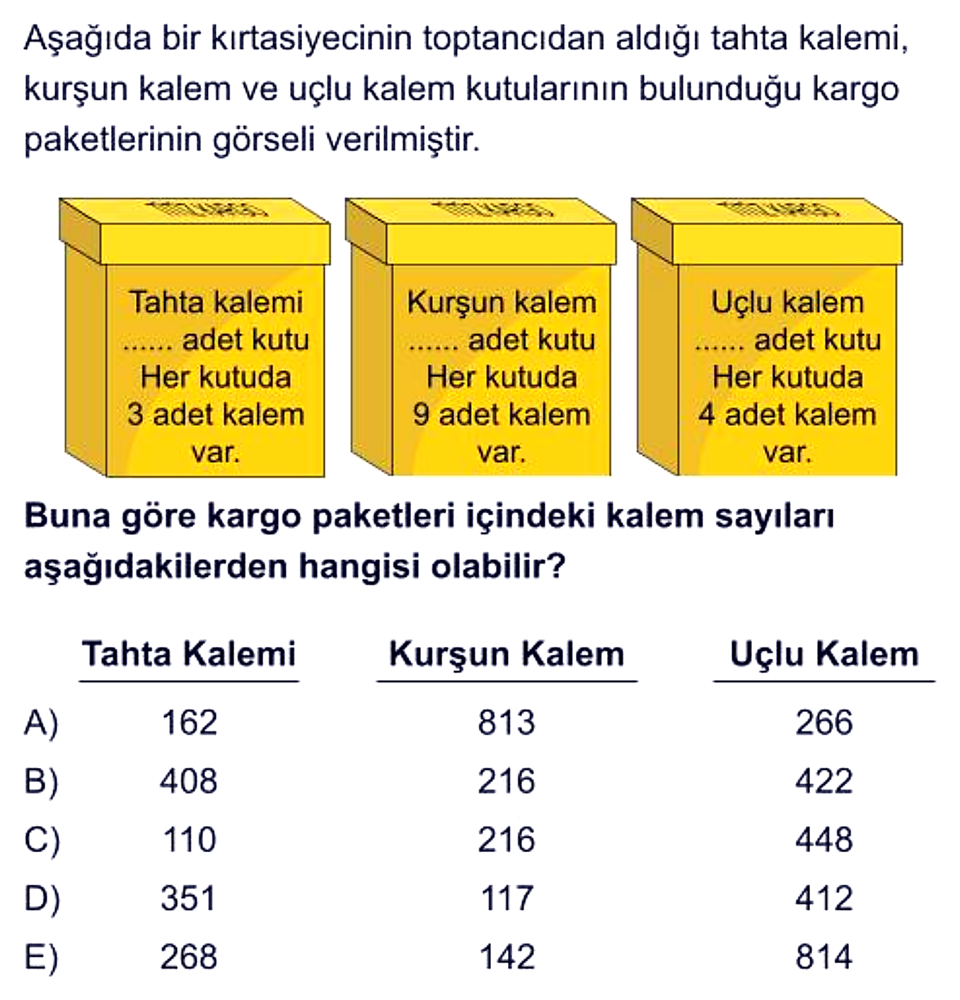
Çözüm
- Tahta kalemleri 3'er, kurşun kalemler 9'ar, uçlu kalemler 4'er → sayılar sırasıyla 3, 9, 4 ile bölünmeli.
- D: $351$ (rakamlar toplamı 9 ✓), $117$ (9 ✓), $412$ ($12$ → 4 ✓).
- Diğer seçeneklerde en az bir koşul bozuluyor → D.
Cevap: D
Soru 14Cevap: A
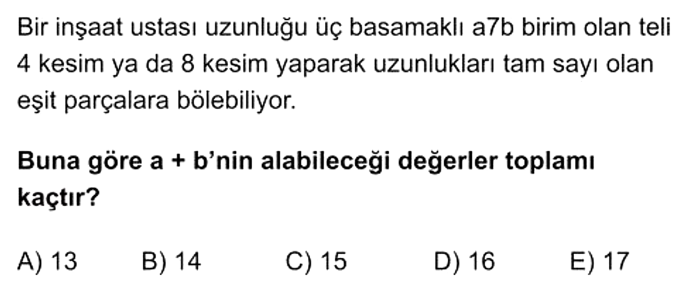
Çözüm
- 4 ya da 8 kesimle 5 ya da 9 eşit parça → $\overline{a7b}$ 5 ve 9 ile bölünür.
- $b\in\{0,5\}$; $a+7+b$ 9'un katı: $b=0 \Rightarrow a=2$; $b=5 \Rightarrow a=6$.
- $a+b\in\{2,11\}$ → toplam 13 → A.
Cevap: A
Soru 15Cevap: E
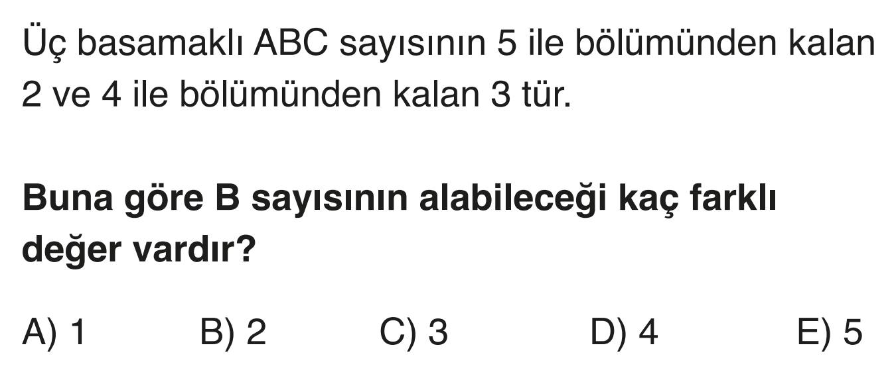
Çözüm
- 5 ile kalan 2 → $C\in\{2,7\}$; 4 ile kalan 3 → sayı tek → $C=7$.
- $\overline{B7}\equiv3 \pmod 4 \Rightarrow 10B+4\equiv0 \Rightarrow B$ çift.
- $B\in\{0,2,4,6,8\}$: 5 değer → E.
Cevap: E
Soru 16Cevap: C
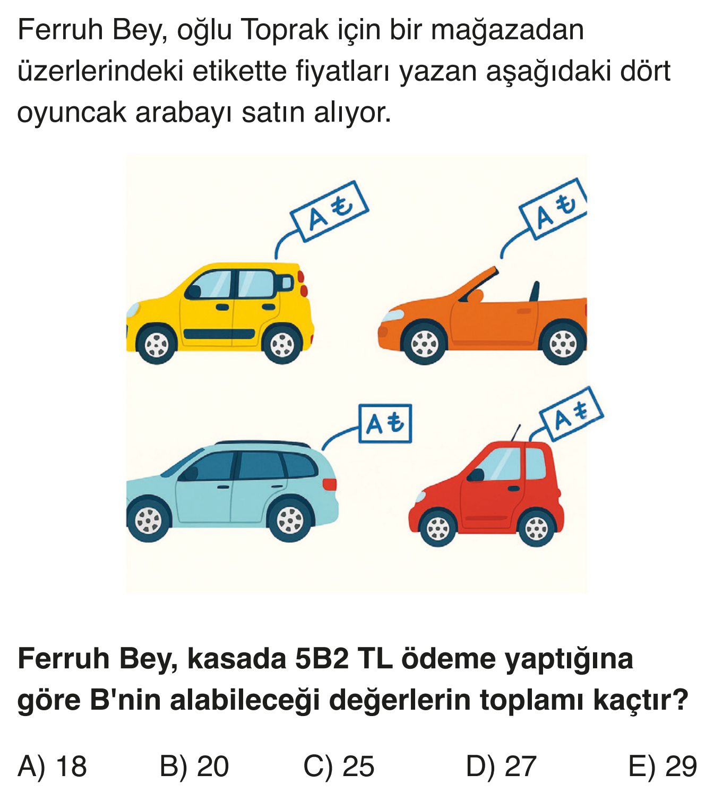
Çözüm
- Dört araba aynı fiyatta → $\overline{5B2}$ 4 ile bölünür.
- $\overline{B2}$ 4'ün katı → $B$ tek.
- $1+3+5+7+9=25$ → C.
Cevap: C
Soru 17Cevap: A
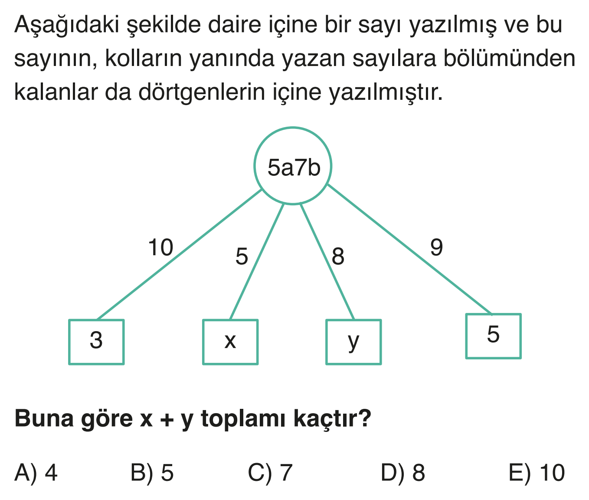
Çözüm
- 10 ile kalan 3 → $b=3$; 5 ile kalan $x=3$.
- 9 ile kalan 5: $5+a+7+3\equiv5 \Rightarrow a=8$ → sayı $5873$; 8 ile: $873=8\cdot109+1 \Rightarrow y=1$.
- $x+y=4$ → A.
Cevap: A
Soru 18Cevap: A
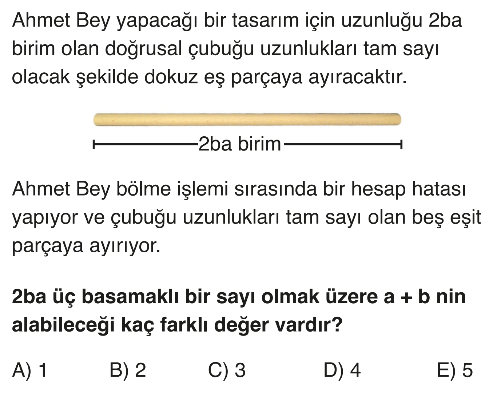
Çözüm
- Çubuk hem 9'a hem 5'e bölünür → $a\in\{0,5\}$.
- $2+b+a$ 9'un katı: $a=0 \Rightarrow b=7$; $a=5 \Rightarrow b=2$.
- Her iki durumda $a+b=7$ → 1 değer → A.
Cevap: A
Soru 19Cevap: B
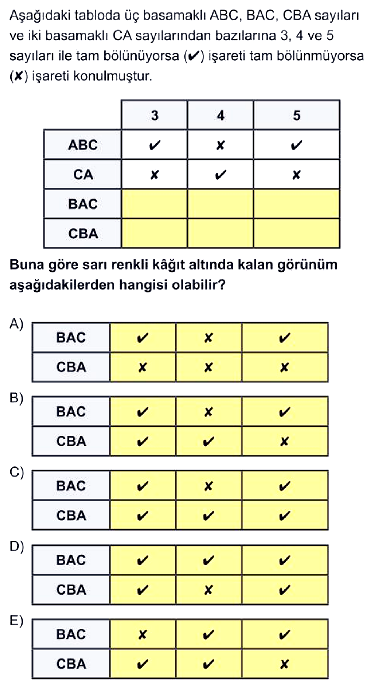
Çözüm
- ABC 3 ile bölünür → aynı rakamlı BAC ve CBA da 3 ile bölünür; ABC 5 ile bölünür ve C ilk rakam → $C=5$.
- BAC 5 ile biter: 5 ile ✓, tek → 4 ile ✗; CA 4 ile bölünür → $A\in\{2,6\}$ → CBA 5 ile ✗.
- BAC: ✓✗✓, CBA: ✓?✗ → yalnız B uygun.
Cevap: B
Soru 20Cevap: B
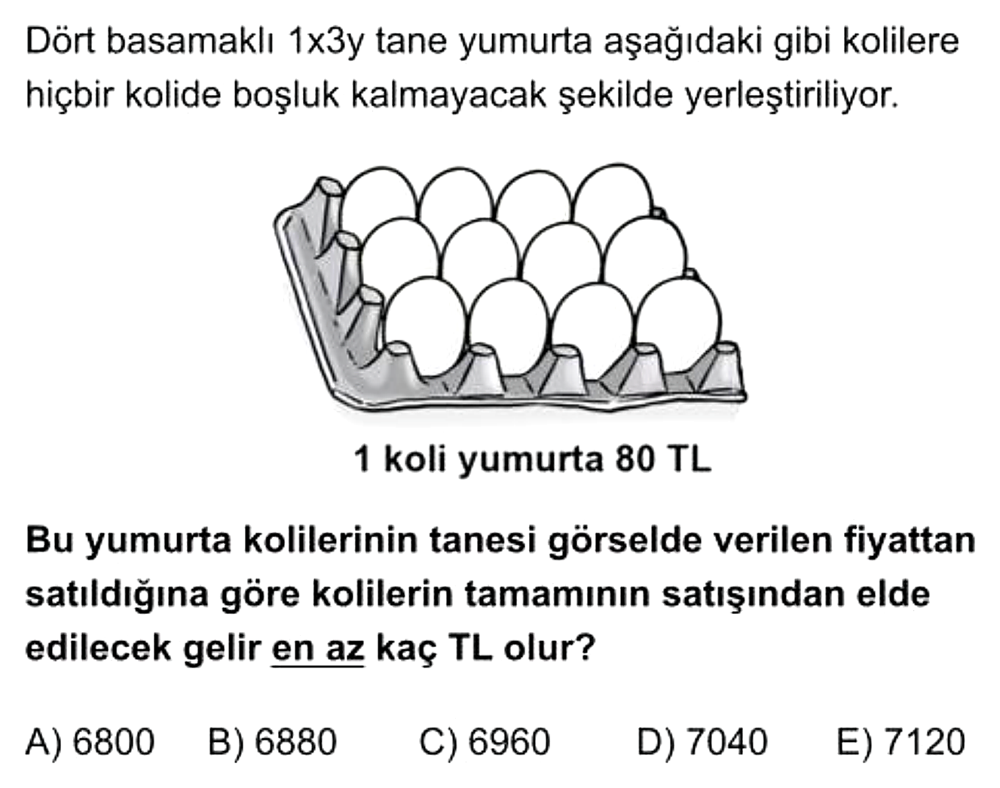
Çözüm
- Kolide $3\times4=12$ yumurta → $\overline{1x3y}$ 12 ile bölünür.
- 4: $\overline{3y}\in\{32,36\}$; 3: $4+x+y$ 3'ün katı → en küçük $1032$.
- $\frac{1032}{12}=86$ koli · $80=6880$ TL → B.
Cevap: B